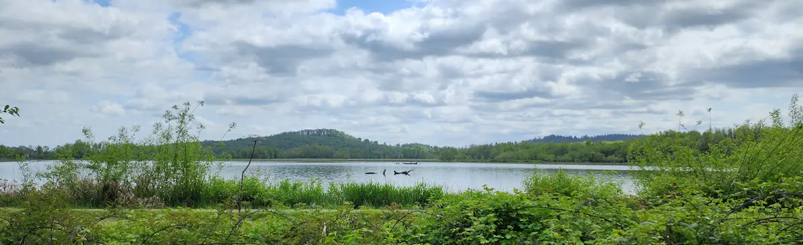

Home
About Us
Our name might be unusually long, but it encompasses our purpose and our passion. When we moved from arid high-desert Utah to the gorgeously green Pacific Northwest, we couldn't wait to get out there and hit the trails. While there are hundreds of hikes now within an hour or two drive, we quickly learned two important things:
- Our idea of 'Easy' and the PNW idea of 'Easy' are not the same thing
- While there are dozens of resources online listing hikes, many of them lack enough information for a lay-person (a.k.a., "newbie", "vistor", "us") to actually find the trailhead
Now that we've been in the area for a couple of years, we thought it'd be a great idea to start a collection of hikes that fit our definition of 'Easy' and share it with others who might be interested in getting back to nature but not by dressing in camo and hoofing it through 50 miles of brambles. All of the hikes you'll find here can be completed in less than or around a mile with low to moderate inclines.
Highlight - William L. Finley National Wildlife Refuge
We recently visited this beautiful refuge located 20 miles south of the city of Corvallis. Spanning over 5,325 acres and home to rare habitats, the refuge supports thousands of species, including six that are threatened or endangered. There are over 12 miles of trails and there is no charge to enjoy this U.S. Fish and Wildlife treasure.
Woodpecker Loop Trail
In just under a mile of walking with a few moderate inclines, this trail hightlights a total of 6 different habitats:
- Oak savanna
- Wetland prairie
- Mixed forest
- Riparian
- Uploand prairie
- Seasonal wetlands